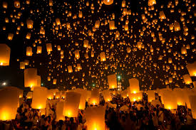
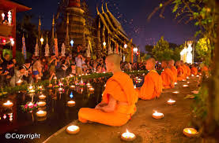
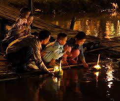
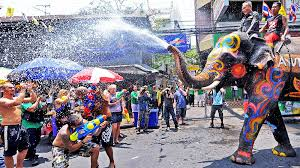
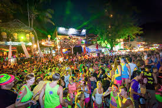
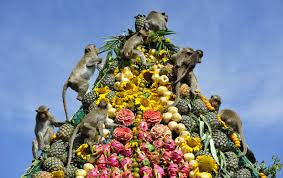
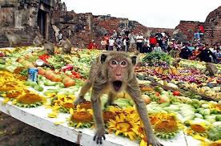

Yi Peng (Lantern Festival)
Yee Peng Festival in Chiang Mai (sometimes written as 'Yi Peng') is celebrated on the full moon of the twelfth lunar month every year, which normally means mid-way through November, but this can vary. In 2016, the Yee Peng lantern festival will be held on November 14th.
Those incredible photos of hundreds, if not thousands of brightly lit lanterns rising into the night's sky over Chiang Mai is an iconic image and Loy Krathong - but did you know that these mass lanterns lighting sessions are actually part of a smaller festival within the wider Loy Krathong celebrations?
This is the time in which locals believe the rivers are filled to their fullest and the moon is at its brightest - the perfect time to 'make merit' and set your floating krathong off on the Ping River, or light your lantern and make a wish for good fortune in the new year.
Loy Krathong
One of the most picturesque festivals in Bangkok is the evening of Loy Krathong, when people gather around lakes, rivers and canals to pay respects to the goddess of water by releasing beautiful lotus shaped rafts, decorated with candles, incense and flowers onto the water.
Every year, Loy Krathong falls on the night of the twelfth lunar month (usually in November), at the end of the rainy season when the full-moon lights up the sky. The sight of thousands of Krathongs, their flickering candles sending a thousand pinpoints of light far into the horizon is a truly magical site, and there are plenty of places in Bangkok where you can get involved with the festivities.
The history behind the festival is complex, and Thais celebrate for many reasons. The main rice harvest season has ended and it’s time to thank the Water Goddess for a year’s worth of her abundant supply, as well as an apology for polluting the waters. Some believe that this is the time to symbolically ‘float away’ all the anger and grudges you have been holding onto, and including a fingernail or a lock of hair is seen as a way of letting go of the dark side of yourself, to start anew free of negative feelings. If your candle stays alight until your Krathong disappears out of sight, it means a year of good luck.
Traditionally, Thais release their krathongs into rivers and small canals called ‘klongs’. Today, a pond or lake is also good. Many places host a string of cultural activities, such as ‘Ram Wong’ dance performances, krathong-making competitions and a beauty contest. People have started releasing lanterns in Bangkok, but this is only a small part of the festival. For the full lantern experience, head up to Chiang Mai for ‘Yee Peng’ festival, although people often fly lanterns in Phuket and Samui, too.
Songkran
This is the biggest, longest and most fun festival in Thailand and... maybe the world! Songkran is a three-day water fight throughout the whole country. Wild scenes of exuberance can be seen throughout the Kingdom, with music, dancing, drinking and people drenched from head to toe. Water guns, hose pipes, buckets in fact, anything you can get our hands on can be used to splash people. One thing is for certain: you will get wet!
As april is the hottest month of the ear in Thailand, everyone gets involved with this country-wide water fight and it brings great relief from the soaring temperatures. Songkran started as a Buddhist tradition, using a light sprinkling of water to symbolise purification but, as time went by, people begaon splashing each other in a more playful manner until reent years, when the entire country becomes one almighty water fight celebrated by millions!
Moonlight Party
Legend has it that in 1987 (or maybe ’86? or ’88?) a group of backpackers threw a birthday party for their friend on the night of the full moon. They had such a good time that they came back the following year to do it again and then the following month and then the month after that. Word got out, and more people started coming each month.
At first, it was like a small house party on the beach: a few hippies and backpackers playing guitars, smoking weed, and having a few beers. But as word spread and more people showed up, it changed. The 1990s brought the rave scene and all the drugs that went along with it. By 2000, this party was squarely on the travel map, and hordes of young people inspired by the movie The Beach flocked to Koh Phangan, where the party is held. The Full Moon Party has only gotten bigger since then.
Now the Full Moon Party is a giant festival-like party with a lot of drinking, dancing, drugs, and sex. Each bar has its own sound system, so you’ll hear different music loudly blasting onto the beach every few feet. The beach itself is lined with people selling alcohol, fire dancers putting on shows, and little booths selling glow-in-the-dark face paint. By the end of the night, you’ll see people passed out on the beach, the odd couple having sex, and lost flip-flops littering the beach looking for new owners.
Lopburi Monkey Banquet
Whilst monkeys roam freely around the old part of town throughout the year, this special day is dedicated entirely to the mischievous and cheeky macaques. A sight to behold, join in with monkey-related games and activities, shop for monkey-themed goodies, watch in amazement as the macaques descend on huge tables laden with food and drinks, gaze with a mixture of fascination and bemusement at the enormous monkey statues, and, overall, be a part of something truly unique!
Monkeys feature prominently in Thai legends, with one of the most famous monkeys, Hanuman, said to have descended from the Lopburi troop. In Hindu beliefs Hanuman was a hero and a God who was a central figure in the Ramayana, in Thai folklore Hanuman is said to have been created by the Hindu God, Shiva. Lopburi was presented to the Thai Hanuman for being a strong and devoted fighter.
Today, monkeys are seen as symbols of good luck, happiness, and prosperity in Thailand.
Food for the Monkey Banquet is donated by local individuals and businesses with the belief that it will further improve their good fortunes.
Fresh fruit and vegetables, nuts, seeds, boiled eggs, bottles of water, and even cartons and cans of juice are offered to the monkeys. Used to stealing from innocent passers-by, the dexterous creatures have no problems at all opening containers!
The veritable feast is lovingly set out on big tables within the monkey’s favourite haunt, ready for the party to begin. The monkeys grab, shove, snatch, and clamber their way to get to their favourites, crudely tossing what they don’t fancy on the floor. Plates are overturned, food is gobbled, drinks are gulped and spilled, and the monkeys enjoy the feeling of a really full belly!